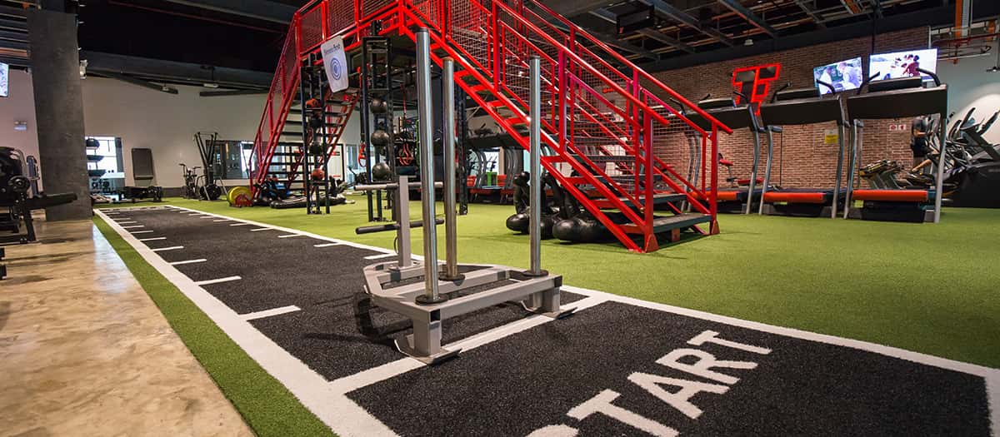
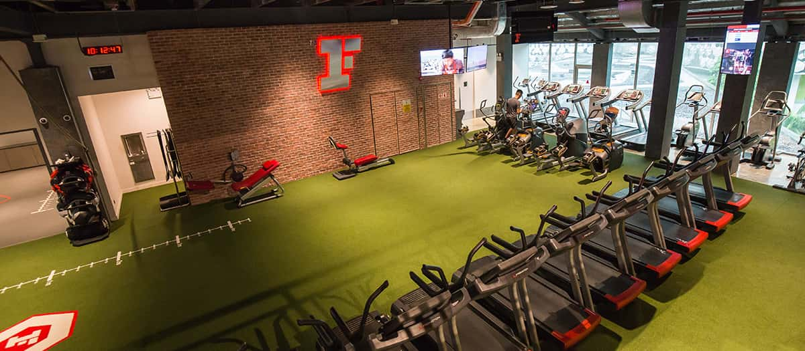
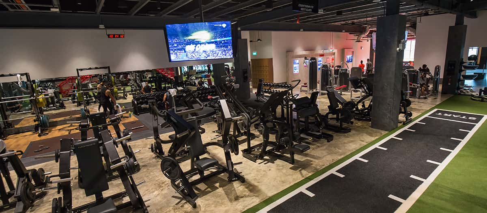
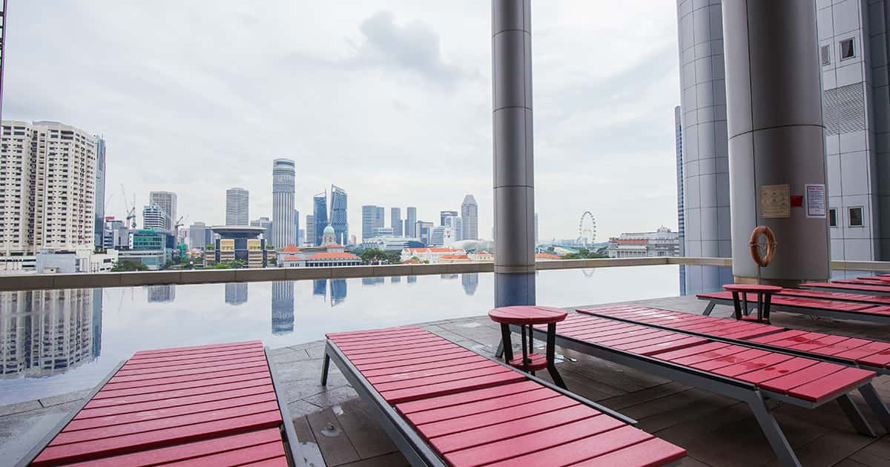
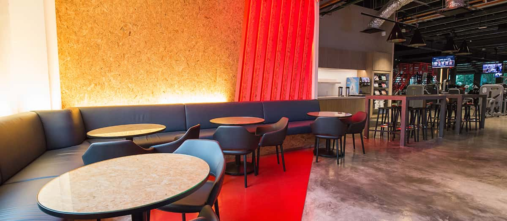
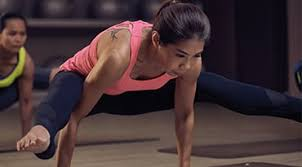
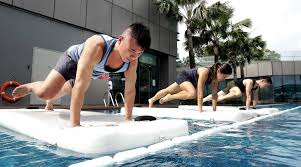
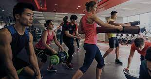

The facilities are mesmerising as there's something for everyone. Plenty of cardio machines like stationary bikes and treadmills for the cardio lovers to numerous free weights and lifting platforms for the big lifters. There's even a functional area for functional movements as well, truly accomodating all types of fitness regimes that different people like. Fitness First Bugis caters to a diverse range of needs, proving to be the ultimate gym to help you achieve your fitness goals.



There's also a lounge for people to enjoy nice refreshments after a hard session as well as locker rooms and swimming pools.


There are numerous activities to be done as well, such as Yoga, HIIT circuit training and even Aqua training like the Aqua Rush. Fitness First strongly values the needs of customers and thus does it's best to cater to them with a wide range of activities.


